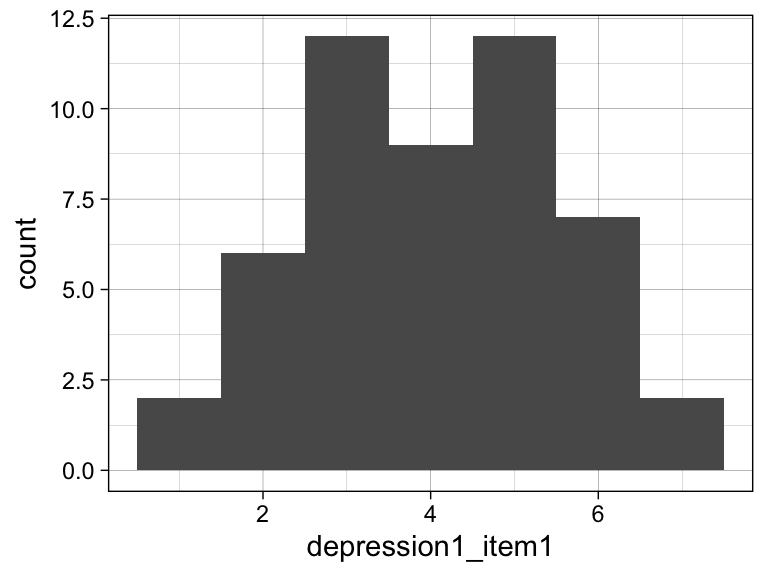
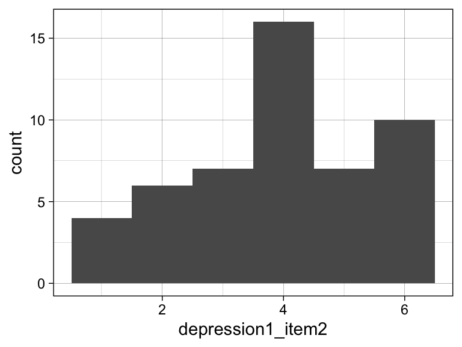
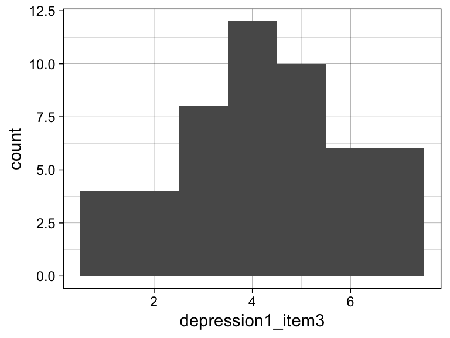
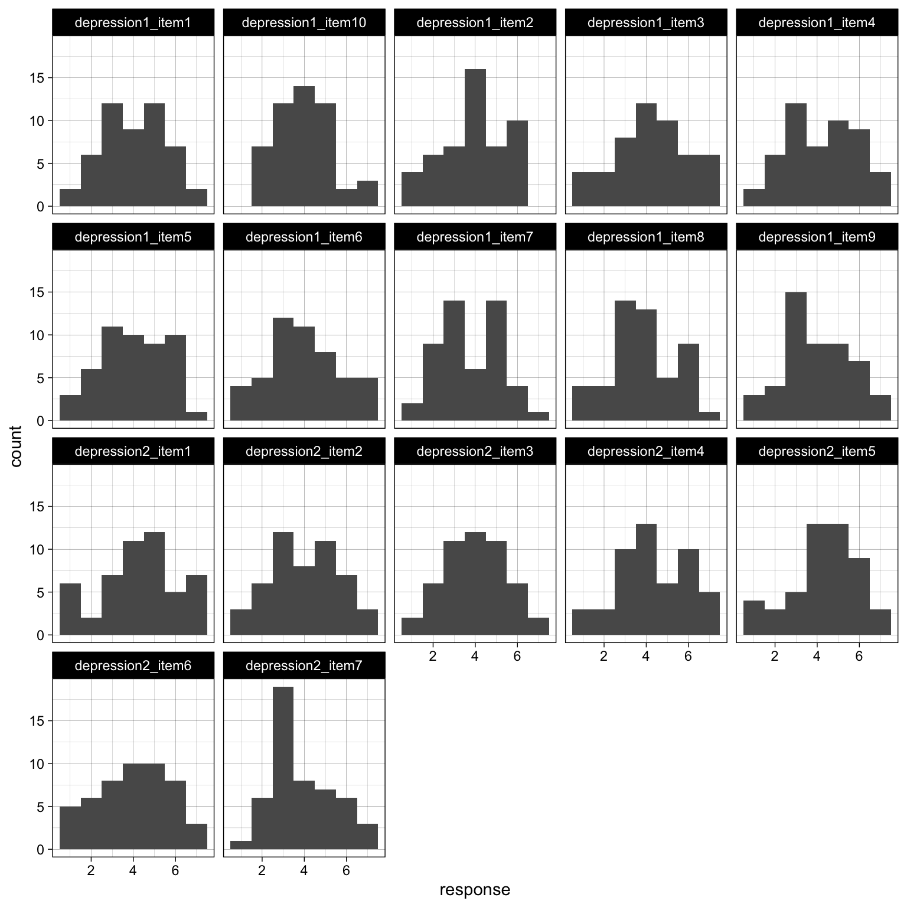
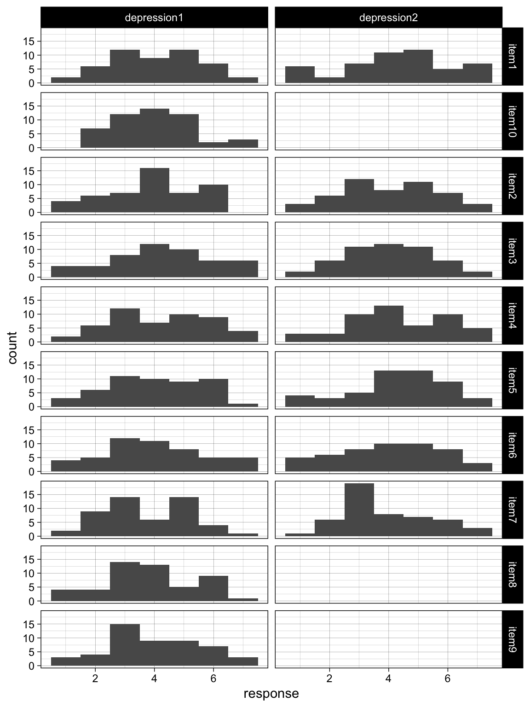
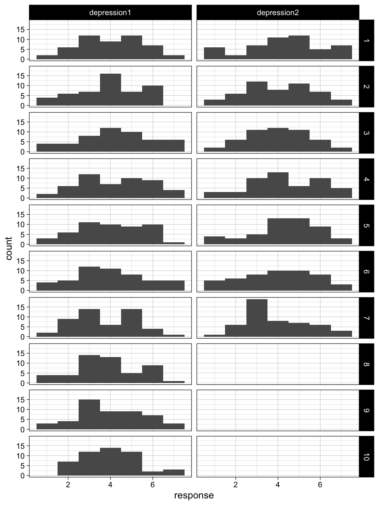
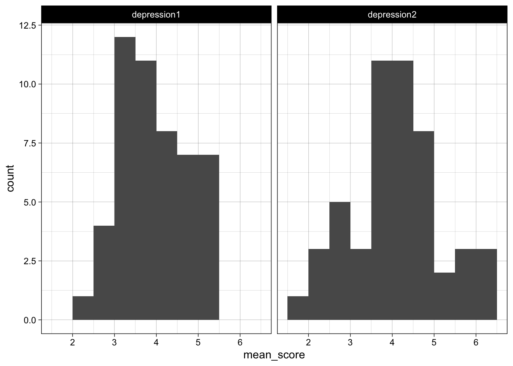
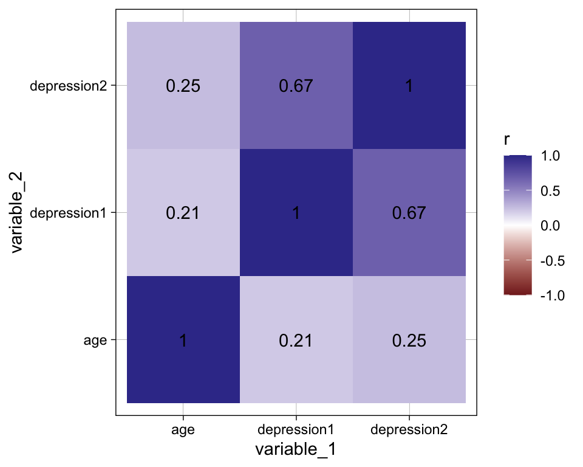

library(dplyr) # for %>%, mutate(), select(), group_by(), summarize(), coalesce()
library(tidyr) # for pivot_longer(), pivot_wider(), separate(), unite()
library(tibble) # for tribble(), as_tibble()
library(stringr) # for str_remove()
library(readr) # for read_csv()
library(ggplot2) # for plotting
library(roundwork) # for round_up()
# devtools::install_github("ianhussey/truffle")
library(truffle) # for simulating data12 Reshaping and pivots
The same data can be arranged in different shapes. Questionnaire data, for example, can have one row per participant with one column per item (“wide” data), or one row per participant per item (“long” data). Neither shape is correct in general, but different tasks are much easier in one shape than the other: calculating Cronbach’s alpha needs wide data, whereas calculating mean scores for many scales, or plotting many items at once, is easiest with long data.
Reshaping data between these shapes is called pivoting. This chapter covers the ideas behind how data should be structured (Tidy Data), the two main functions for reshaping data, pivot_longer() and pivot_wider() from the {tidyr} package, and related functions for splitting and combining columns.
12.1 Tidy data
12.1.1 The three rules
‘Tidy Data’ is a set of ideas about how data should be structured (Wickham, 2014). The original article is very much worth reading. It emphasizes that data processing is part of data analysis, not only in a procedural sense, but also because how the data is shaped determines which research questions and analyses are easy to conduct.
There are three rules that make a dataset tidy, according to the Tidy Data chapter of R for Data Science (Wickham et al., 2023):
- Each variable is a column; each column is a variable.
- Each observation is a row; each row is an observation.
- Each value is a cell; each cell is a single value.
Read Wickham’s chapter on Tidy Data in the second edition of R4DS. His visualizations are useful, but unfortunately the license he uses means I can’t directly include them in this book.
The illustrations below, by Julia Lowndes and Allison Horst, explain its simplest elements well. They come from the Openscapes blog post Tidy data for efficiency, reproducibility, and collaboration, which is a short and very readable introduction to the ideas in this section. Allison Horst’s other artwork on R and data science is also well worth browsing.


Illustrations from the Openscapes blog Tidy Data for reproducibility, efficiency, and collaboration by Julia Lowndes and Allison Horst.
12.1.2 More and less tidy data
{tidyr} includes several versions of the same data: the number of tuberculosis cases and the population of three countries in two years. table1 is the tidiest, and therefore the easiest to work with in most workflows, because it follows all three rules.
table1| country | year | cases | population |
|---|---|---|---|
| Afghanistan | 1999 | 745 | 19987071 |
| Afghanistan | 2000 | 2666 | 20595360 |
| Brazil | 1999 | 37737 | 172006362 |
| Brazil | 2000 | 80488 | 174504898 |
| China | 1999 | 212258 | 1272915272 |
| China | 2000 | 213766 | 1280428583 |
table2| country | year | type | count |
|---|---|---|---|
| Afghanistan | 1999 | cases | 745 |
| Afghanistan | 1999 | population | 19987071 |
| Afghanistan | 2000 | cases | 2666 |
| Afghanistan | 2000 | population | 20595360 |
| Brazil | 1999 | cases | 37737 |
| Brazil | 1999 | population | 172006362 |
| Brazil | 2000 | cases | 80488 |
| Brazil | 2000 | population | 174504898 |
| China | 1999 | cases | 212258 |
| China | 1999 | population | 1272915272 |
| China | 2000 | cases | 213766 |
| China | 2000 | population | 1280428583 |
table3| country | year | rate |
|---|---|---|
| Afghanistan | 1999 | 745/19987071 |
| Afghanistan | 2000 | 2666/20595360 |
| Brazil | 1999 | 37737/172006362 |
| Brazil | 2000 | 80488/174504898 |
| China | 1999 | 212258/1272915272 |
| China | 2000 | 213766/1280428583 |
12.1.2.1 Exercise
Calculate the rate of tuberculosis per 10,000 people (cases / population * 10000) for each country and year using table1. Then think about how you would do it with table2 and table3. Which rules of Tidy Data do table2 and table3 break?
NoteClick to show answer
table1 %>%
mutate(rate = cases / population * 10000)| country | year | cases | population | rate |
|---|---|---|---|---|
| Afghanistan | 1999 | 745 | 19987071 | 0.372741 |
| Afghanistan | 2000 | 2666 | 20595360 | 1.294466 |
| Brazil | 1999 | 37737 | 172006362 | 2.193931 |
| Brazil | 2000 | 80488 | 174504898 | 4.612363 |
| China | 1999 | 212258 | 1272915272 | 1.667495 |
| China | 2000 | 213766 | 1280428583 | 1.669488 |
With table1, it is a single mutate(), because cases and population are separate columns in the same row.
table2 breaks the first rule: the ‘count’ column contains two different variables, cases and population, distinguished by the ‘type’ column. The two numbers you need are in different rows, so you can’t simply divide one column by another.
table3 breaks the third rule: the ‘rate’ column contains two values in each cell (e.g., “745/19987071”), stored as text. You would need to split it into two numeric columns first.
12.1.3 Non-tidy is not the same as messy
There are many forms of data that are non-tidy without being messy or wrong, e.g., data structured for a specific statistical function, or for efficient storage. A proper understanding of Tidy Data requires that you understand this distinction. See Wickham’s description in the first edition of R4DS.
12.1.4 There is no one tidy shape
The same data can be represented in more than one way and still be tidy: it can be wider or longer. For example, table2 can be pivoted to a wider format to create table1:
table2 %>%
pivot_wider(names_from = type,
values_from = count)| country | year | cases | population |
|---|---|---|---|
| Afghanistan | 1999 | 745 | 19987071 |
| Afghanistan | 2000 | 2666 | 20595360 |
| Brazil | 1999 | 37737 | 172006362 |
| Brazil | 2000 | 80488 | 174504898 |
| China | 1999 | 212258 | 1272915272 |
| China | 2000 | 213766 | 1280428583 |
What counts as a single observation depends on your question. If you are interested in each country in each year, table1 is tidy. If you are interested in how cases and population compare as measures, table2 might be more useful.
This animation illustrates what happens when you pivot data to be wider or longer (source):

12.2 Example data
The rest of the chapter uses simulated data from participants who completed two depression scales on a 1 to 7 Likert scale: ‘depression1’ has 10 items and ‘depression2’ has 7 items. The data is in wide format: one row per participant and one column per item, which is how most survey software exports data.
dat_likert_wide <-
truffle_likert(study_design = "crosssectional",
n_per_condition = 50,
factors = c("X1_latent", "X2_latent"),
prefixes = c("depression1_item", "depression2_item"),
alpha = c(.70, .70),
n_items = c(10, 7),
n_levels = 7,
r_among_outcomes = 0.80,
seed = 42) %>%
truffle_demographics()
dat_likert_wide %>%
head()| id | age | gender | depression1_item1 | depression1_item2 | depression1_item3 | depression1_item4 | depression1_item5 | depression1_item6 | depression1_item7 | depression1_item8 | depression1_item9 | depression1_item10 | depression2_item1 | depression2_item2 | depression2_item3 | depression2_item4 | depression2_item5 | depression2_item6 | depression2_item7 |
|---|---|---|---|---|---|---|---|---|---|---|---|---|---|---|---|---|---|---|---|
| 1 | 20 | female | 3 | 1 | 5 | 2 | 2 | 1 | 4 | 4 | 1 | 5 | 6 | 3 | 3 | 4 | 1 | 2 | 2 |
| 2 | 22 | female | 4 | 6 | 6 | 5 | 4 | 6 | 4 | 6 | 3 | 4 | 6 | 6 | 2 | 4 | 4 | 3 | 4 |
| 3 | 45 | female | 4 | 3 | 3 | 2 | 3 | 3 | 2 | 2 | 5 | 4 | 5 | 4 | 4 | 4 | 6 | 5 | 3 |
| 4 | 28 | female | 3 | 4 | 4 | 1 | 3 | 6 | 3 | 4 | 2 | 3 | 3 | 5 | 3 | 4 | 4 | 5 | 4 |
| 5 | 31 | female | 3 | 4 | 2 | 6 | 5 | 3 | 5 | 4 | 3 | 2 | 3 | 6 | 2 | 7 | 3 | 2 | 3 |
| 6 | 33 | male | 6 | 4 | 4 | 5 | 4 | 2 | 2 | 5 | 2 | 5 | 4 | 4 | 3 | 3 | 6 | 5 | 4 |
Wide data like this is useful for some analyses, e.g., calculating internal consistency, which needs each item in its own column:
res_alpha_depression1 <- dat_likert_wide %>%
select(starts_with("depression1_")) %>%
psych::alpha()
res_alpha_depression2 <- dat_likert_wide %>%
select(starts_with("depression2_")) %>%
psych::alpha()
alpha_depression1 <- round_up(res_alpha_depression1$total$raw_alpha, digits = 2)
alpha_depression2 <- round_up(res_alpha_depression2$total$raw_alpha, digits = 2)Cronbach’s \(\alpha\):
- depression1 scale: 0.71
- depression2 scale: 0.78
But for many other tasks, wide data makes us repeat ourselves.
12.3 pivot_longer()
12.3.1 Why make data longer?
Imagine you want to plot the distribution of responses to each item. With wide data, you need a separate plot for each column:
ggplot(dat_likert_wide, aes(x = depression1_item1)) +
geom_histogram(binwidth = 1, boundary = -0.5) +
theme_linedraw()
ggplot(dat_likert_wide, aes(x = depression1_item2)) +
geom_histogram(binwidth = 1, boundary = -0.5) +
theme_linedraw()
ggplot(dat_likert_wide, aes(x = depression1_item3)) +
geom_histogram(binwidth = 1, boundary = -0.5) +
theme_linedraw()
# ... and another 14 almost identical plots for the other itemsThis commits the coding sin of repeating ourselves: it is long, tedious to write, and every copy is a chance to make a mistake, such as changing the column name but forgetting to change the plot title.
If the data were long, with one row per participant per item, we could make all the plots with a single ggplot() call that uses facet_wrap() to create one panel per item. pivot_longer() does this:
dat_likert_long <- dat_likert_wide %>%
pivot_longer(cols = starts_with("depression"),
names_to = "scale_item",
values_to = "response")
head(dat_likert_long)| id | age | gender | scale_item | response |
|---|---|---|---|---|
| 1 | 20 | female | depression1_item1 | 3 |
| 1 | 20 | female | depression1_item2 | 1 |
| 1 | 20 | female | depression1_item3 | 5 |
| 1 | 20 | female | depression1_item4 | 2 |
| 1 | 20 | female | depression1_item5 | 2 |
| 1 | 20 | female | depression1_item6 | 1 |
ggplot(dat_likert_long, aes(x = response)) +
geom_histogram(binwidth = 1, boundary = -0.5) +
theme_linedraw() +
facet_wrap(~ scale_item)
pivot_longer() has three main arguments:
cols: the columns to be stacked into rows.names_to: the name of a new column that will contain the names of those columns.values_to: the name of a new column that will contain their values.
All the other columns (‘id’, ‘gender’, and ‘age’) are repeated in each new row. The data went from 50 rows and 20 columns to 850 rows (50 participants x 17 items) and 5 columns.
12.3.2 Selecting columns to pivot
The cols argument uses the same helpers as select(), so there are several ways to specify the same columns, e.g., starts_with("depression"), a range such as depression1_item1:depression2_item7, or negative selection.
12.3.2.1 Exercise
Rewrite the pivot_longer() above using negative selection, i.e., by specifying the columns that should not be pivoted.
NoteClick to show answer
dat_likert_wide %>%
pivot_longer(cols = c(-id, -gender, -age),
names_to = "scale_item",
values_to = "response") %>%
head()| id | age | gender | scale_item | response |
|---|---|---|---|---|
| 1 | 20 | female | depression1_item1 | 3 |
| 1 | 20 | female | depression1_item2 | 1 |
| 1 | 20 | female | depression1_item3 | 5 |
| 1 | 20 | female | depression1_item4 | 2 |
| 1 | 20 | female | depression1_item5 | 2 |
| 1 | 20 | female | depression1_item6 | 1 |
cols = !c(id, gender, age) does the same thing. Note that the columns you pivot must all be of compatible types, because their values all go into the single ‘response’ column. If you selected ‘gender’ (character) along with the numeric items, pivot_longer() would throw an error.
12.3.2.2 Exercise
Why is dat_likert_long still not as tidy as it could be?
NoteClick to show answer
The ‘scale_item’ column contains two variables in each cell: which scale the item belongs to (e.g., “depression1”) and the item number (e.g., “item1”). This also causes the facets in the plot above to be in the wrong order: “item1”, “item10”, “item2”, …, because they are sorted alphabetically as text. The next section shows how to split them.
12.4 Cleaning up column names after pivoting
Column names often contain more than one piece of information, e.g., the scale and the item number, or the measure and the timepoint. After pivoting, this information ends up in a single column, which usually needs to be split or cleaned.
12.4.1 separate()
separate() splits one column into several, using a separator:
dat_likert_long_separated <- dat_likert_long %>%
separate(scale_item, into = c("scale", "item"), sep = "_")
head(dat_likert_long_separated)| id | age | gender | scale | item | response |
|---|---|---|---|---|---|
| 1 | 20 | female | depression1 | item1 | 3 |
| 1 | 20 | female | depression1 | item2 | 1 |
| 1 | 20 | female | depression1 | item3 | 5 |
| 1 | 20 | female | depression1 | item4 | 2 |
| 1 | 20 | female | depression1 | item5 | 2 |
| 1 | 20 | female | depression1 | item6 | 1 |
ggplot(dat_likert_long_separated, aes(x = response)) +
geom_histogram(binwidth = 1, boundary = -0.5) +
theme_linedraw() +
facet_grid(item ~ scale)
Note that newer versions of {tidyr} also have separate_wider_delim(), which does the same job and gives more informative errors when the column can’t be split as expected. You will see both in other people’s code.
The items are still sorted alphabetically, because ‘item’ contains text like “item10”.
12.4.1.1 Exercise
Use mutate() and {stringr} functions from the Strings and factors chapter to remove “item” from the ‘item’ column and convert it to a number, so that the items are plotted in the correct order.
NoteClick to show answer
dat_likert_long_separated %>%
mutate(item = str_remove(item, "item"),
item = as.integer(item)) %>%
ggplot(aes(x = response)) +
geom_histogram(binwidth = 1, boundary = -0.5) +
theme_linedraw() +
facet_grid(item ~ scale)
Numbers sort numerically, so items 1 to 10 are now in the correct order.
12.4.2 Splitting names inside the pivot
Splitting is so common that pivot_longer() can do it directly. Give names_to more than one name, and say where to split with names_sep:
dat_likert_wide %>%
pivot_longer(cols = starts_with("depression"),
names_to = c("scale", "item"),
names_sep = "_",
values_to = "response") %>%
head()| id | age | gender | scale | item | response |
|---|---|---|---|---|---|
| 1 | 20 | female | depression1 | item1 | 3 |
| 1 | 20 | female | depression1 | item2 | 1 |
| 1 | 20 | female | depression1 | item3 | 5 |
| 1 | 20 | female | depression1 | item4 | 2 |
| 1 | 20 | female | depression1 | item5 | 2 |
| 1 | 20 | female | depression1 | item6 | 1 |
names_prefix removes text from the start of every name, e.g., names_prefix = "wellbeing_" turns “wellbeing_baseline” into “baseline”.
12.4.3 names_pattern and names_transform
For more complex names, names_pattern uses a regular expression (see the Strings and factors chapter) to say which parts of each name to keep. Each part in brackets goes into one of the names_to columns. names_transform then converts the new columns to another type, e.g., integer:
dat_likert_long_tidy <- dat_likert_wide %>%
pivot_longer(cols = starts_with("depression"),
names_to = c("scale", "item"),
names_pattern = "(depression\\d+)_item(\\d+)",
names_transform = list(item = as.integer),
values_to = "response")
head(dat_likert_long_tidy)| id | age | gender | scale | item | response |
|---|---|---|---|---|---|
| 1 | 20 | female | depression1 | 1 | 3 |
| 1 | 20 | female | depression1 | 2 | 1 |
| 1 | 20 | female | depression1 | 3 | 5 |
| 1 | 20 | female | depression1 | 4 | 2 |
| 1 | 20 | female | depression1 | 5 | 2 |
| 1 | 20 | female | depression1 | 6 | 1 |
ggplot(dat_likert_long_tidy, aes(x = response)) +
geom_histogram(binwidth = 1, boundary = -0.5) +
theme_linedraw() +
facet_grid(item ~ scale)
"(depression\\d+)_item(\\d+)" means: “depression” followed by one or more digits, which goes into ‘scale’; then “_item”, which is dropped; then one or more digits, which go into ‘item’. This does everything in the previous section in a single step, and the data is now fully tidy: one row per participant per item, with the scale and item in separate columns.
12.5 Calculating scores from long data
Long data makes it much easier to calculate summaries for many variables at once. For example, to calculate the mean and SD of each item in wide format, you would have to write out every column:
dat_likert_wide %>%
summarize(mean_depression1_item1 = mean(depression1_item1),
mean_depression1_item2 = mean(depression1_item2),
mean_depression1_item3 = mean(depression1_item3),
# ... 14 more means, then 17 more SDs
sd_depression2_item7 = sd(depression2_item7))In long format, it is a group_by() and a summarize(), however many items there are:
dat_likert_long_tidy %>%
group_by(scale, item) %>%
summarize(mean = mean(response),
sd = sd(response),
.groups = "drop") %>%
head()| scale | item | mean | sd |
|---|---|---|---|
| depression1 | 1 | 4.04 | 1.511318 |
| depression1 | 2 | 3.92 | 1.523155 |
| depression1 | 3 | 4.24 | 1.720940 |
| depression1 | 4 | 4.20 | 1.653691 |
| depression1 | 5 | 4.00 | 1.564922 |
| depression1 | 6 | 3.98 | 1.696214 |
The same approach calculates each participant’s score on each scale, without writing out item1 + item2 + item3 ....
12.5.0.1 Exercise
Using dat_likert_long_tidy:
- Calculate each participant’s mean score on each scale, and save it as
dat_likert_meanscored_long. Keep the ‘gender’ and ‘age’ columns, because we’ll need them later. - Calculate the sample’s mean and SD on each scale.
- Plot the distribution of participants’ mean scores on each scale.
NoteClick to show answer
dat_likert_meanscored_long <- dat_likert_long_tidy %>%
group_by(id, gender, age, scale) %>%
summarize(mean_score = mean(response),
.groups = "drop")
head(dat_likert_meanscored_long)| id | gender | age | scale | mean_score |
|---|---|---|---|---|
| 1 | female | 20 | depression1 | 2.800000 |
| 1 | female | 20 | depression2 | 3.000000 |
| 2 | female | 22 | depression1 | 4.800000 |
| 2 | female | 22 | depression2 | 4.142857 |
| 3 | female | 45 | depression1 | 3.100000 |
| 3 | female | 45 | depression2 | 4.428571 |
dat_likert_meanscored_long %>%
group_by(scale) %>%
summarize(mean = mean(mean_score),
sd = sd(mean_score))| scale | mean | sd |
|---|---|---|
| depression1 | 3.994 | 0.8182635 |
| depression2 | 4.120 | 1.0726854 |
ggplot(dat_likert_meanscored_long, aes(x = mean_score)) +
geom_histogram(binwidth = 0.5, boundary = 0) +
theme_linedraw() +
facet_wrap(~ scale)
Adding ‘gender’ and ‘age’ to group_by() keeps them in the summarized data. This works because they have only one value per participant.
12.6 pivot_wider()
12.6.1 Making data wider
pivot_wider() is the opposite of pivot_longer(). Some tasks are easier with wide data, e.g., correlating the two scales or calculating a difference score, because these need the values to be in separate columns of the same row.
dat_likert_meanscored_wide <- dat_likert_meanscored_long %>%
pivot_wider(names_from = scale,
values_from = mean_score)
head(dat_likert_meanscored_wide)| id | gender | age | depression1 | depression2 |
|---|---|---|---|---|
| 1 | female | 20 | 2.8 | 3.000000 |
| 2 | female | 22 | 4.8 | 4.142857 |
| 3 | female | 45 | 3.1 | 4.428571 |
| 4 | female | 28 | 3.3 | 4.000000 |
| 5 | female | 31 | 3.7 | 3.714286 |
| 6 | male | 33 | 3.9 | 4.142857 |
cor(dat_likert_meanscored_wide$depression1,
dat_likert_meanscored_wide$depression2)[1] 0.6674715pivot_wider() has two main arguments:
names_from: the column whose values become the new column names.values_from: the column whose values fill the new columns.
names_prefix adds text to the start of each new column name, which is useful when the values are numbers or short labels, e.g., names_prefix = "meanscore_" would create ‘meanscore_depression1’ and ‘meanscore_depression2’.
12.6.2 Identifying rows with id_cols
pivot_wider() needs to know which rows belong together, i.e., which rows should be combined into one row of the wider data. By default, it uses all the columns not named in names_from or values_from. Above, these were ‘id’, ‘gender’, and ‘age’, which all have one value per participant, so this worked.
If one of these other columns varies within a participant, rows are not combined correctly. {tidyr}‘s built-in cms_patient_experience dataset has one row per organization per measure. ’measure_title’ differs between rows of the same organization:
head(cms_patient_experience)| org_pac_id | org_nm | measure_cd | measure_title | prf_rate |
|---|---|---|---|---|
| 0446157747 | USC CARE MEDICAL GROUP INC | CAHPS_GRP_1 | CAHPS for MIPS SSM: Getting Timely Care, Appointments, and Information | 63 |
| 0446157747 | USC CARE MEDICAL GROUP INC | CAHPS_GRP_2 | CAHPS for MIPS SSM: How Well Providers Communicate | 87 |
| 0446157747 | USC CARE MEDICAL GROUP INC | CAHPS_GRP_3 | CAHPS for MIPS SSM: Patient’s Rating of Provider | 86 |
| 0446157747 | USC CARE MEDICAL GROUP INC | CAHPS_GRP_5 | CAHPS for MIPS SSM: Health Promotion and Education | 57 |
| 0446157747 | USC CARE MEDICAL GROUP INC | CAHPS_GRP_8 | CAHPS for MIPS SSM: Courteous and Helpful Office Staff | 85 |
| 0446157747 | USC CARE MEDICAL GROUP INC | CAHPS_GRP_12 | CAHPS for MIPS SSM: Stewardship of Patient Resources | 24 |
# without id_cols: measure_title differs between rows, so rows aren't combined
cms_patient_experience %>%
pivot_wider(names_from = measure_cd,
values_from = prf_rate) %>%
head()| org_pac_id | org_nm | measure_title | CAHPS_GRP_1 | CAHPS_GRP_2 | CAHPS_GRP_3 | CAHPS_GRP_5 | CAHPS_GRP_8 | CAHPS_GRP_12 |
|---|---|---|---|---|---|---|---|---|
| 0446157747 | USC CARE MEDICAL GROUP INC | CAHPS for MIPS SSM: Getting Timely Care, Appointments, and Information | 63 | NA | NA | NA | NA | NA |
| 0446157747 | USC CARE MEDICAL GROUP INC | CAHPS for MIPS SSM: How Well Providers Communicate | NA | 87 | NA | NA | NA | NA |
| 0446157747 | USC CARE MEDICAL GROUP INC | CAHPS for MIPS SSM: Patient’s Rating of Provider | NA | NA | 86 | NA | NA | NA |
| 0446157747 | USC CARE MEDICAL GROUP INC | CAHPS for MIPS SSM: Health Promotion and Education | NA | NA | NA | 57 | NA | NA |
| 0446157747 | USC CARE MEDICAL GROUP INC | CAHPS for MIPS SSM: Courteous and Helpful Office Staff | NA | NA | NA | NA | 85 | NA |
| 0446157747 | USC CARE MEDICAL GROUP INC | CAHPS for MIPS SSM: Stewardship of Patient Resources | NA | NA | NA | NA | NA | 24 |
# with id_cols: one row per organization
cms_patient_experience %>%
pivot_wider(id_cols = starts_with("org"),
names_from = measure_cd,
values_from = prf_rate) %>%
head()| org_pac_id | org_nm | CAHPS_GRP_1 | CAHPS_GRP_2 | CAHPS_GRP_3 | CAHPS_GRP_5 | CAHPS_GRP_8 | CAHPS_GRP_12 |
|---|---|---|---|---|---|---|---|
| 0446157747 | USC CARE MEDICAL GROUP INC | 63 | 87 | 86 | 57 | 85 | 24 |
| 0446162697 | ASSOCIATION OF UNIVERSITY PHYSICIANS | 59 | 85 | 83 | 63 | 88 | 22 |
| 0547164295 | BEAVER MEDICAL GROUP PC | 49 | NA | 75 | 44 | 73 | 12 |
| 0749333730 | CAPE PHYSICIANS ASSOCIATES PA | 67 | 84 | 85 | 65 | 82 | 24 |
| 0840104360 | ALLIANCE PHYSICIANS INC | 66 | 87 | 87 | 64 | 87 | 28 |
| 0840109864 | REX HOSPITAL INC | 73 | 87 | 84 | 67 | 91 | 30 |
Without id_cols, the result has a “staircase” of mostly NA rows, because each measure is treated as a separate observation.
12.6.3 Missing combinations and values_fill
When a combination of id_cols and names_from doesn’t exist in the long data, pivot_wider() fills it with NA. Sometimes a different value is correct. For example, counting how often each participant used each response option on the depression1 scale, as a check for response styles such as always choosing the middle option:
dat_likert_long_tidy %>%
filter(scale == "depression1") %>%
count(id, response) %>%
arrange(response) %>%
pivot_wider(names_from = response,
names_prefix = "n_response_",
values_from = n,
values_fill = 0) %>%
arrange(id) %>%
head()| id | n_response_1 | n_response_2 | n_response_3 | n_response_4 | n_response_5 | n_response_6 | n_response_7 |
|---|---|---|---|---|---|---|---|
| 1 | 3 | 2 | 1 | 2 | 2 | 0 | 0 |
| 2 | 0 | 0 | 1 | 4 | 1 | 4 | 0 |
| 3 | 0 | 3 | 4 | 2 | 1 | 0 | 0 |
| 4 | 1 | 1 | 4 | 3 | 0 | 1 | 0 |
| 5 | 0 | 2 | 3 | 2 | 2 | 1 | 0 |
| 6 | 0 | 3 | 0 | 3 | 3 | 1 | 0 |
count() only creates rows for responses that were used, so a participant who never chose a given response has no row for it. Here, a missing combination means the count is 0, so values_fill = 0 is correct. Only use values_fill when you know what a missing combination means.
12.6.4 Duplicates and values_fn
If more than one row has the same combination of id_cols and names_from, pivot_wider() can’t put a single value in the cell. For example, reaction time data with several trials per condition:
dat_rt <- tribble(
~id, ~condition, ~rt,
1, "congruent", 512,
1, "congruent", 498,
1, "incongruent", 601,
1, "incongruent", 640,
2, "congruent", 455,
2, "congruent", 470,
2, "incongruent", 530,
2, "incongruent", 562
)
dat_rt %>%
pivot_wider(names_from = condition,
values_from = rt)| id | congruent | incongruent |
|---|---|---|
| 1 | 512, 498 | 601, 640 |
| 2 | 455, 470 | 530, 562 |
{tidyr} warns that the values are not uniquely identified, and creates list-columns containing several values per cell. You could use values_fn = mean to summarize the duplicates during the pivot, but it is usually clearer to summarize first and then pivot:
dat_rt %>%
group_by(id, condition) %>%
summarize(mean_rt = mean(rt),
.groups = "drop") %>%
pivot_wider(names_from = condition,
values_from = mean_rt) %>%
mutate(congruence_effect = incongruent - congruent)| id | congruent | incongruent | congruence_effect |
|---|---|---|---|
| 1 | 505.0 | 620.5 | 115.5 |
| 2 | 462.5 | 546.0 | 83.5 |
If you didn’t expect duplicates, the warning is telling you something important about your data, e.g., that a participant completed the study twice. Check with count(id, condition) %>% filter(n > 1) rather than summarizing them away.
12.7 More complex pivots
12.7.1 Several variables in the column names: .value
Sometimes column names contain both the name of a variable and the value of another variable. For example, in this meta-analysis data, each study has columns for the mean, SD, and sample size of the treatment (‘trt’) and control (‘ctrl’) conditions:
dat_meta <- read_csv("../data/processed/dat_meta.csv", show_col_types = FALSE) %>%
select(study, mean_trt, sd_trt, n_trt, mean_ctrl, sd_ctrl, n_ctrl)
head(dat_meta)| study | mean_trt | sd_trt | n_trt | mean_ctrl | sd_ctrl | n_ctrl |
|---|---|---|---|---|---|---|
| Ahmadi, 2019 | 41.58 | 10.21 | 6 | 63.16 | 12.95 | 6 |
| Anker,2009 | 26.35 | 10.02 | 206 | 21.69 | 8.69 | 204 |
| Aubin,2009 | 8.00 | 4.00 | 24 | 7.20 | 4.40 | 20 |
| Baucom, 1986 | 274.75 | 23.02 | 8 | 275.00 | 16.34 | 8 |
| Beach,1992 | 8.40 | 6.22 | 15 | 20.47 | 10.68 | 14 |
| Cohen,2010 | 20.34 | 13.48 | 16 | 25.28 | 13.86 | 14 |
We want one row per study per condition, with columns ‘mean’, ‘sd’, and ‘n’. The special name ".value" in names_to tells pivot_longer() that this part of each column name is the name of a new column, rather than a value:
dat_meta_long <- dat_meta %>%
pivot_longer(cols = -study,
names_to = c(".value", "condition"),
names_sep = "_")
head(dat_meta_long)| study | condition | mean | sd | n |
|---|---|---|---|---|
| Ahmadi, 2019 | trt | 41.58 | 10.21 | 6 |
| Ahmadi, 2019 | ctrl | 63.16 | 12.95 | 6 |
| Anker,2009 | trt | 26.35 | 10.02 | 206 |
| Anker,2009 | ctrl | 21.69 | 8.69 | 204 |
| Aubin,2009 | trt | 8.00 | 4.00 | 24 |
| Aubin,2009 | ctrl | 7.20 | 4.40 | 20 |
“mean_trt” was split into “mean”, which became the column name, and “trt”, which went into ‘condition’. Without .value, you would have to select and rename the columns for each condition separately and stack them with bind_rows() (see the Binding and joining chapter).
{tidyr}’s built-in household data has the same structure, with each family’s children’s dates of birth and names in separate columns. values_drop_na = TRUE drops the rows for children that don’t exist:
household| family | dob_child1 | dob_child2 | name_child1 | name_child2 |
|---|---|---|---|---|
| 1 | 1998-11-26 | 2000-01-29 | Susan | Jose |
| 2 | 1996-06-22 | NA | Mark | NA |
| 3 | 2002-07-11 | 2004-04-05 | Sam | Seth |
| 4 | 2004-10-10 | 2009-08-27 | Craig | Khai |
| 5 | 2000-12-05 | 2005-02-28 | Parker | Gracie |
household %>%
pivot_longer(cols = !family,
names_to = c(".value", "child"),
names_sep = "_",
values_drop_na = TRUE)| family | child | dob | name |
|---|---|---|---|
| 1 | child1 | 1998-11-26 | Susan |
| 1 | child2 | 2000-01-29 | Jose |
| 2 | child1 | 1996-06-22 | Mark |
| 3 | child1 | 2002-07-11 | Sam |
| 3 | child2 | 2004-04-05 | Seth |
| 4 | child1 | 2004-10-10 | Craig |
| 4 | child2 | 2009-08-27 | Khai |
| 5 | child1 | 2000-12-05 | Parker |
| 5 | child2 | 2005-02-28 | Gracie |
12.7.2 Several value columns in pivot_wider()
The reverse also works: values_from can take several columns. Each one is combined with each value of names_from. names_glue controls how the new names are built, using {.value} for the name of the value column:
dat_meta_long %>%
pivot_wider(names_from = condition,
values_from = c(mean, sd, n),
names_glue = "{.value}_{condition}") %>%
head()| study | mean_trt | mean_ctrl | sd_trt | sd_ctrl | n_trt | n_ctrl |
|---|---|---|---|---|---|---|
| Ahmadi, 2019 | 41.58 | 63.16 | 10.21 | 12.95 | 6 | 6 |
| Anker,2009 | 26.35 | 21.69 | 10.02 | 8.69 | 206 | 204 |
| Aubin,2009 | 8.00 | 7.20 | 4.00 | 4.40 | 24 | 20 |
| Baucom, 1986 | 274.75 | 275.00 | 23.02 | 16.34 | 8 | 8 |
| Beach,1992 | 8.40 | 20.47 | 6.22 | 10.68 | 15 | 14 |
| Cohen,2010 | 20.34 | 25.28 | 13.48 | 13.86 | 16 | 14 |
This recreates the original columns (in a slightly different order), which is the most convenient layout for calculating an effect size for each study, because all the values for both conditions are in the same row.
12.7.3 Items measured at several timepoints
Repeated measures questionnaire data often has column names that combine the item and the timepoint, e.g., ‘phq1_t1’. Pivoting longer with two names_to columns separates them, which makes it easy to calculate a mean score at each timepoint:
dat_repeated <- tribble(
~id, ~phq1_t1, ~phq2_t1, ~phq3_t1, ~phq1_t2, ~phq2_t2, ~phq3_t2,
1, 2, 3, 2, 1, 1, 2,
2, 3, 3, 2, 3, 2, 3,
3, 1, 2, 1, 0, 1, 0
)
dat_repeated_scored <- dat_repeated %>%
# one row per participant per item per timepoint
pivot_longer(cols = -id,
names_to = c("item", "timepoint"),
names_sep = "_",
values_to = "response") %>%
# mean score per participant per timepoint
group_by(id, timepoint) %>%
summarize(phq_mean = mean(response),
.groups = "drop") %>%
# one row per participant, to calculate change
pivot_wider(names_from = timepoint,
names_prefix = "phq_mean_",
values_from = phq_mean) %>%
mutate(phq_change = phq_mean_t2 - phq_mean_t1)
dat_repeated_scored| id | phq_mean_t1 | phq_mean_t2 | phq_change |
|---|---|---|---|
| 1 | 2.333333 | 1.3333333 | -1 |
| 2 | 2.666667 | 2.6666667 | 0 |
| 3 | 1.333333 | 0.3333333 | -1 |
This “longer, summarize, wider” sequence is one of the most common patterns in processing psychology data.
12.7.4 A table of descriptive statistics
Pivots are also useful for building tables for reports. summarize() with across() calculates several statistics for several variables at once, but returns them as a single very wide row:
dat_descriptives_wide <- dat_likert_meanscored_wide %>%
summarize(across(c(age, depression1, depression2),
list(mean = mean, sd = sd)))
dat_descriptives_wide| age_mean | age_sd | depression1_mean | depression1_sd | depression2_mean | depression2_sd |
|---|---|---|---|---|---|
| 30.08 | 7.97148 | 3.994 | 0.8182635 | 4.12 | 1.072685 |
Pivoting longer with .value turns this into a table with one row per variable:
dat_descriptives_wide %>%
pivot_longer(cols = everything(),
names_to = c("variable", ".value"),
names_sep = "_") %>%
mutate(across(c(mean, sd), \(x) round_up(x, digits = 2)))| variable | mean | sd |
|---|---|---|
| age | 30.08 | 7.97 |
| depression1 | 3.99 | 0.82 |
| depression2 | 4.12 | 1.07 |
Note that this relies on the variable names not containing an underscore themselves. If they did, e.g., ‘depression_total’, you would need names_pattern instead, e.g., "(.*)_(mean|sd)".
12.7.5 A correlation matrix as a long table
cor() returns a matrix: a wide structure with one row and one column per variable. Converting it to a data frame and pivoting it longer gives one row per pair of variables, which can be filtered, sorted, or plotted:
dat_cor_long <- dat_likert_meanscored_wide %>%
select(age, depression1, depression2) %>%
cor() %>%
as_tibble(rownames = "variable_1") %>%
pivot_longer(cols = -variable_1,
names_to = "variable_2",
values_to = "r")
dat_cor_long| variable_1 | variable_2 | r |
|---|---|---|
| age | age | 1.0000000 |
| age | depression1 | 0.2075117 |
| age | depression2 | 0.2545692 |
| depression1 | age | 0.2075117 |
| depression1 | depression1 | 1.0000000 |
| depression1 | depression2 | 0.6674715 |
| depression2 | age | 0.2545692 |
| depression2 | depression1 | 0.6674715 |
| depression2 | depression2 | 1.0000000 |
ggplot(dat_cor_long, aes(x = variable_1, y = variable_2, fill = r)) +
geom_tile() +
geom_text(aes(label = round_up(r, digits = 2))) +
scale_fill_gradient2(limits = c(-1, 1)) +
theme_linedraw()
The long table contains each pair of variables twice (e.g., age with depression1, and depression1 with age), plus each variable with itself. For a table of correlations, keep each pair once:
dat_cor_long %>%
filter(variable_1 < variable_2)| variable_1 | variable_2 | r |
|---|---|---|
| age | depression1 | 0.2075117 |
| age | depression2 | 0.2545692 |
| depression1 | depression2 | 0.6674715 |
12.8 Combining columns
12.8.1 unite()
unite() is the opposite of separate(): it combines several columns into one, e.g., to recreate the original column names before pivoting wider:
dat_likert_long_tidy %>%
unite(col = "scale_item", scale, item, sep = "_item") %>%
head()| id | age | gender | scale_item | response |
|---|---|---|---|---|
| 1 | 20 | female | depression1_item1 | 3 |
| 1 | 20 | female | depression1_item2 | 1 |
| 1 | 20 | female | depression1_item3 | 5 |
| 1 | 20 | female | depression1_item4 | 2 |
| 1 | 20 | female | depression1_item5 | 2 |
| 1 | 20 | female | depression1_item6 | 1 |
12.8.2 coalesce()
unite() pastes several values together. Sometimes we instead need to combine several columns that each contain part of the values. For example, if a survey was changed partway through data collection, and age was saved in a different column in each version:
dat_versions <- tribble(
~id, ~age_v1, ~age_v2,
1, 23, NA,
2, 31, NA,
3, NA, 27,
4, NA, 45,
5, NA, NA
)
dat_versions| id | age_v1 | age_v2 |
|---|---|---|
| 1 | 23 | NA |
| 2 | 31 | NA |
| 3 | NA | 27 |
| 4 | NA | 45 |
| 5 | NA | NA |
We want a single ‘age’ column. You already know how to do this with mutate() and if_else(): “if ‘age_v1’ is not missing, use it; otherwise, use ‘age_v2’”.
dat_versions %>%
mutate(age = if_else(condition = !is.na(age_v1), # the logical test applied: is age_v1 not missing?
true = age_v1, # if so, use age_v1
false = age_v2)) # if not, use age_v2 (which may itself be NA)| id | age_v1 | age_v2 | age |
|---|---|---|---|
| 1 | 23 | NA | 23 |
| 2 | 31 | NA | 31 |
| 3 | NA | 27 | 27 |
| 4 | NA | 45 | 45 |
| 5 | NA | NA | NA |
This works, but it gets clumsy quickly. If there were a third version of the survey, you would need to nest one if_else() inside another, or write a case_when():
dat_versions %>%
mutate(age = case_when(!is.na(age_v1) ~ age_v1,
!is.na(age_v2) ~ age_v2,
!is.na(age_v3) ~ age_v3,
TRUE ~ NA_real_))Because this is such a common task, {dplyr} provides coalesce(), which does exactly the same thing: it takes several columns and returns, for each row, the first value that is not NA.
dat_versions %>%
mutate(age = coalesce(age_v1, age_v2))| id | age_v1 | age_v2 | age |
|---|---|---|---|
| 1 | 23 | NA | 23 |
| 2 | 31 | NA | 31 |
| 3 | NA | 27 | 27 |
| 4 | NA | 45 | 45 |
| 5 | NA | NA | NA |
The result is identical to the if_else() version, and coalesce(age_v1, age_v2, age_v3) would extend to a third column without any extra logic.
Participant 5 has no age in either column, so their age remains NA.
Note that if a participant had values in both columns, coalesce() would silently use the first one. It’s worth checking whether this ever happens, e.g., with filter(!is.na(age_v1) & !is.na(age_v2)), before relying on it.
12.8.3 Wrappers
coalesce() illustrates a general pattern worth noticing. Many {tidyverse} functions are “wrappers”: shortcuts for logic that you could already write yourself with more general functions. You have already seen several in the Data transformation I and Data transformation II chapters:
- Renaming and relocating columns inside
select()does the work ofrename()andrelocate(). na_if(age, -99)is a shortcut forif_else(age == -99, NA, age).slice_head(n = 5)is a shortcut forfilter(row_number() <= 5).drop_na(gender)is a shortcut forfilter(!is.na(gender)).coalesce(age_v1, age_v2)is a shortcut forif_else(!is.na(age_v1), age_v1, age_v2).
Wrappers make code shorter and easier to read, and are often less error-prone. But it is useful to understand the logic they wrap: it helps you know exactly what a function will do in unusual cases (e.g., what happens when both columns contain a value), and when no wrapper exists for your problem, you can fall back on writing the logic yourself with mutate(), if_else(), and case_when().
12.9 Key functions
The main functions covered in this chapter:
| Function | Package | What it does |
|---|---|---|
pivot_longer() |
{tidyr} | Makes data longer: stacks several columns into rows. |
separate() |
{tidyr} | Splits one column into several, using a separator. |
separate_wider_delim() |
{tidyr} | A newer alternative to separate() with more informative errors. |
pivot_wider() |
{tidyr} | Makes data wider: spreads rows into several columns. |
as_tibble(rownames = ) |
{tibble} | Converts a matrix, e.g., from cor(), to a tibble, keeping the row names as a column. |
unite() |
{tidyr} | Combines several columns into one by pasting their values together. |
coalesce() |
{dplyr} | Returns, for each row, the first value that is not NA across several columns. |
12.10 Exercises
Check your learning with the following questions. Exercises that involve running code should be done in your local copy of this chapter’s .qmd file (see the Introduction for how to get a copy).
12.10.1 Check your understanding
Answer the questions, then click the button at the bottom to check your answers.
- Which function splits one column into several columns using a separator?
- A wide data frame has 50 rows: one per participant, with an ‘id’ column and 17 item columns. After pivoting the 17 item columns longer, how many rows does it have?
- The
colsargument ofpivot_longer()accepts the same helpers asselect(), such asstarts_with(). - Which
pivot_wider()argument replaces missing combinations with a value of your choice, e.g., 0? coalesce(age_v1, age_v2)returnsNAonly when both ‘age_v1’ and ‘age_v2’ areNA.
NoteClick to show explanations
separate()splits one column into several, e.g., “depression1_item1” into “depression1” and “item1”.unite()does the opposite.- Each participant gets one row per item: 50 participants x 17 items = 850 rows. The ‘id’ column is repeated in each row.
- True. You can use
starts_with(), ranges such asdepression1_item1:depression2_item7, or negative selection such as-id. values_fill. Only use it when you know what a missing combination means, e.g., that a count is 0.- True.
coalesce()returns the first non-missing value in each row, so the result is onlyNAif every column isNAin that row.
What are the three rules of Tidy Data? Which one does table3 break, and which does table2 break?
NoteClick to show answer
Each variable is a column, each observation is a row, and each value is a cell. table3 breaks the third rule: the ‘rate’ column stores two values, cases and population, in a single cell (e.g., “745/19987071”). table2 breaks the first rule: the ‘count’ column contains two different variables, cases and population, distinguished by the ‘type’ column.
Is long data tidier than wide data?
NoteClick to show answer
Not necessarily. Both can be tidy, and the same data can be tidy in more than one shape. What counts as one observation depends on the question you are asking. Item-level wide data (one row per participant) is the right shape for calculating Cronbach’s alpha, whereas long data (one row per participant per item) is the right shape for calculating mean scores per participant with group_by() and summarize(), or for plotting all items with facet_wrap(). Pivoting lets you move between them as needed.
What do the cols, names_to, and values_to arguments of pivot_longer() do?
NoteClick to show answer
cols selects the columns to be stacked into rows. Their names go into a new column named by names_to, and their values go into a new column named by values_to. All other columns are repeated for each new row.
Why does this code throw an error? How could you fix it?
dat_likert_wide %>%
pivot_longer(cols = -id,
names_to = "scale_item",
values_to = "response")
NoteClick to show answer
cols = -id selects every column except ‘id’, including ‘gender’ (character) and ‘age’ (numeric). All the values have to go into a single ‘response’ column, and a column can only contain one type, so they can’t be combined. Select only the item columns, e.g., cols = starts_with("depression") or cols = c(-id, -gender, -age).
What problem does names_transform = list(item = as.integer) solve?
NoteClick to show answer
Item numbers extracted from column names are text, so they sort alphabetically: “1”, “10”, “2”, …. Converting them to integers makes them sort, and appear in plots, in numerical order.
What does ".value" do in names_to? When do you need it?
NoteClick to show answer
It tells pivot_longer() that part of each column name is the name of a new column, rather than a value to be stored. You need it when the column names contain both a variable name and the value of another variable, e.g., ‘mean_trt’, ‘sd_trt’, ‘mean_ctrl’, and ‘sd_ctrl’, where you want columns ‘mean’ and ‘sd’ and a ‘condition’ column.
What is the role of id_cols in pivot_wider()? What happens if you leave it out and the data contains a column that differs between rows from the same participant, e.g., the time each response was made?
NoteClick to show answer
id_cols defines which columns identify a row in the wider data, i.e., which rows belong together. By default it uses every column not named in names_from or values_from. If one of these differs between rows from the same participant, those rows are treated as different observations, and you get a “staircase” of rows full of NAs rather than one row per participant. Either remove such columns before pivoting or name the identifying columns in id_cols.
What happens when pivot_wider() finds more than one value for the same cell, e.g., because a participant completed the same timepoint twice?
NoteClick to show answer
It warns that the values are not uniquely identified and creates list-columns containing all the values in each cell, rather than single values. This is almost always a sign that the data has duplicates you need to deal with first (e.g., with distinct() or by deciding which attempt to keep). Check with, e.g., count(id, timepoint) %>% filter(n > 1).
What does coalesce(x, y) return when both ‘x’ and ‘y’ contain a value? Why is that worth checking?
NoteClick to show answer
It returns ‘x’, the first non-missing value, and silently ignores ‘y’. If the two values disagree, this hides a problem in the data that you would probably want to know about, so check whether any rows have values in both columns first.
12.10.2 Practice
In your local copy of this chapter’s .qmd file, complete the tasks below. No solutions are provided for these tasks, to reduce the temptation to peek or copy-paste. Use the hints if you get stuck.
12.10.2.1 Self-report data
- Load ‘data_selfreport_raw.csv’ from
../data/raw/. - Keep only the ‘subject’, ‘trialcode’, and ‘response’ columns, and remove the instructions trials.
- Convert ‘response’ to numeric, setting any non-numeric responses to
NA. - Use
pivot_wider()to create a data frame with one row per participant and one column for each item (‘like’, ‘positive’, ‘prefer’). - How many participants are missing at least one item? Did the pivot create any missing values that weren’t in the long data? Why?
- Calculate each participant’s mean score across the three items, for participants with complete data only.
- Then do the same calculation again, starting from the long data and without pivoting. Which approach do you find easier, and why?
NoteClick to show hint
as.numeric() turns text that isn’t a number into NA (with a warning). In pivot_wider(), the item names come from ‘trialcode’ and the values from ‘response’. Compare the number of rows for each item in the long data with count(trialcode): not every participant has a row for every item. To calculate the score without pivoting, use group_by(subject) and summarize(), and think about how to check that a participant has all three items.
12.10.2.2 Demographics data
In the Data transformation chapters, we processed the age and gender data in ‘data_demographics_raw.csv’ separately, using filter(). This time, use a pivot:
- Load ‘data_demographics_raw.csv’ from
../data/raw/. - Keep only the ‘subject’, ‘trialcode’, and ‘response’ columns, and pivot the data so that there is one row per participant with an ‘age’ column and a ‘gender’ column.
- Clean both columns, as in previous chapters.
- Calculate the sample size, the mean and SD of age, and the number of participants of each gender.
NoteClick to show hint
Use pivot_wider() with names_from = trialcode and values_from = response. After the pivot, the cleaning code from the Data transformation chapters works on the new ‘age’ and ‘gender’ columns with mutate(), without needing filter() to separate them first.
12.10.2.3 Affect Misattribution Procedure data
The Affect Misattribution Procedure (AMP) claims to measure automatic evaluations of stimuli without the participant’s intention or awareness (Payne et al., 2013). Participants are asked to evaluate Chinese characters as pleasant or unpleasant, and to ignore the positive or negative images (primes) that are briefly presented before each character. The idea is that participants should evaluate only the Chinese characters, but the primes nonetheless influence their evaluations. The AMP effect is the difference between evaluations of the characters preceded by positive vs. negative primes.
- Load ‘data_amp_raw.csv’ from
../data/raw/. - Remove the instructions trials and the practice trials.
- Create an ‘evaluation’ variable. When ‘trialcode’ is “prime_positive”, ‘evaluation’ is equal to ‘correct’. When ‘trialcode’ is “prime_negative”, ‘evaluation’ is ‘correct’ reverse scored.
- Calculate each participant’s mean evaluation for each prime type (positive vs. negative).
- Pivot the data wider so that you have the columns ‘mean_evaluation_positive’ and ‘mean_evaluation_negative’.
- Calculate each participant’s ‘amp_effect’: the difference between their mean evaluations after positive vs. negative primes.
- Create a separate data frame with the mean and SD of ‘amp_effect’ in the sample. Is there an AMP effect, i.e., is the mean ‘amp_effect’ above 0?
NoteClick to show hint
Check which values ‘trialcode’ contains with count(trialcode): the practice trials have their own trialcodes. ‘correct’ is 0 or 1, so reverse scoring it is 1 - correct, which you can apply with if_else() or case_when(). Summarize with group_by(subject, trialcode), then use pivot_wider(); to get the column names asked for, you may need to clean up the values of ‘trialcode’ first, e.g., with str_remove(), and use names_prefix.